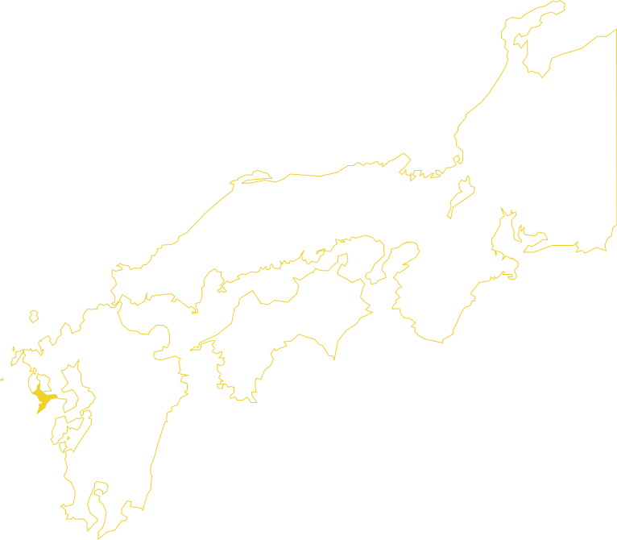
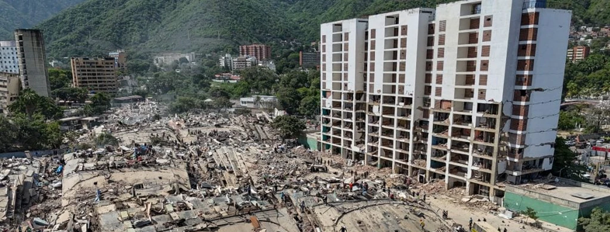
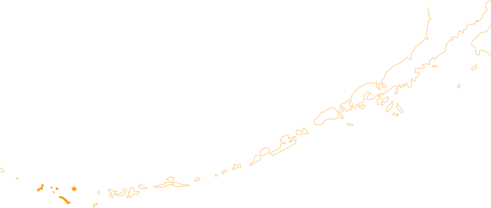
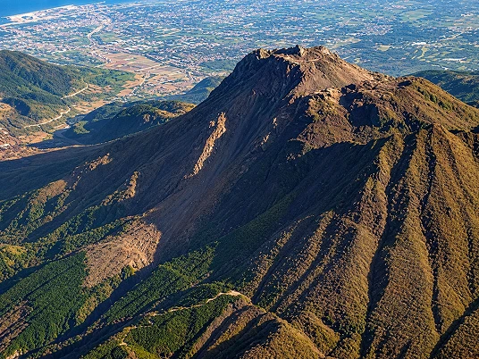
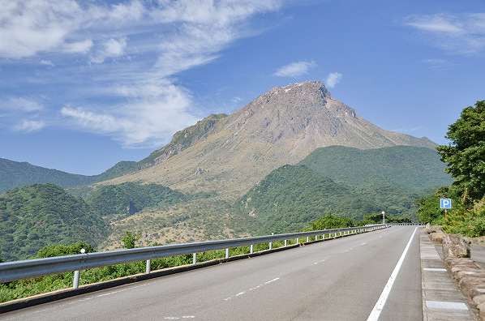
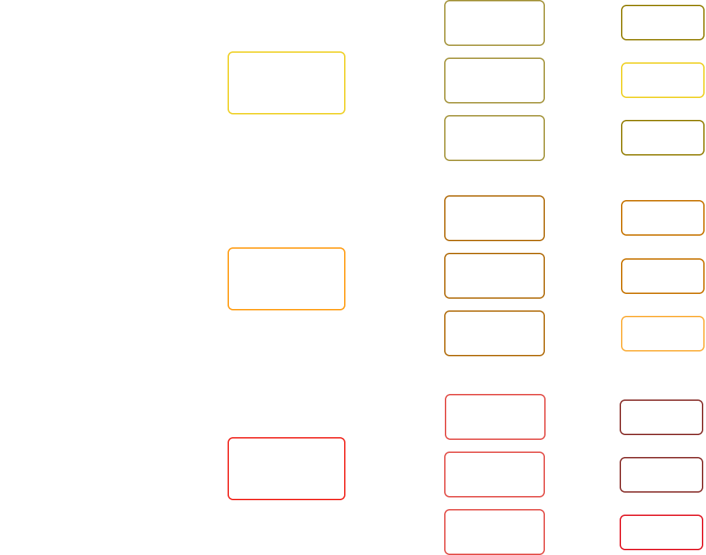

1. Visão geral da bomba
1,52 m(diâmetro)
3,35 m (comprimento)
Peso total
4.900 kg
Uma bomba, um terremoto e um vulcão.
Será que a humanidade conseguiu se equiparar com a natureza
Enquanto a Little Boy era uma arma de urânio com sistema de inserção, a Fat Man usava plutônio e um sistema de implosão. Mais complexa, mais potente e muito mais precisa.
Lançada sobre Nagasaki em 9 de agosto de 1945, três dias depois da Little Boy em Hiroshima.
A Fat Man era um verdadeiro quebra-cabeça de engenharia. Cada camada e componente tinha um papel essencial.
Estabilizado em fase delta com adição de gálio.
Dispostos de forma esférica. Quando detonados, geram uma onda de choque convergente e simétrica.
Disparava uma chuva de nêutrons no momento exato da compressão máxima do plutônio.
Refletia nêutrons e ainda sofria fissão rápida, respondendo por boa parte do rendimento final da arma.
Nagasaki, localizada na ilha de Kyushu, no Japão, possui um relevo montanhoso que divide a cidade em dois vales costeiros. Em 9 de agosto de 1945, a bomba atômica explodiu sobre o vale de Urakami, onde ficavam fábricas e áreas residenciais.
O formato de bacia do vale intensificou a destruição na região, enquanto as colinas ao redor bloquearam parte da onda de choque e da radiação, protegendo outras áreas da cidade. Assim, o relevo limitou a extensão dos danos, mas a tragédia foi enorme, com estimativas de 50 mil a 100 mil mortos.

N a g a s a k i i l h a d e K y u s h u
O terremoto das Ilhas Rat ocorreu em 4 de fevereiro de 1965 as 05:01 UTC (02:01 no horário de Brasília). As ilhas rat são um conjunto de ilhas no extremo sudoeste do Alaska, no arquipelago das ilhas Aleutas, um conjunto de ilhas vulcanicas desabitadas.
O terremoto ainda causou um tsunami de 10,7 metros na ilha de Shemya. Mesmo com o terremoto e o tsunami, nenhuma morte foi registrada, apenas cerca de 10 mil dolares em danos.
O epicentro do sismo foi um pouco abaixo da ilha de Anchitka, perto da Sibéria e no meio do Pacífico. Mesmo assim, o terremoto pode ser sentido na Califórnia, Havaí, Mexico, Japão e na costa oeste do Peru, atravessando completamente pelo Pacífico.
Epicentro

S h e m y a I l h a s R a t A r q u i p é l a g o d a s A l e u t a s A l a s k aAs ilhas Rat se situam na zona de subducção entre a placa Norte-Americana e a do Pacífico, mas o que isto significa? Antes de respondermos, precisamos entender como as placas tectonicas funcionam.
As placas tectonicas são grandes blocos de rocha que ficam debaixo da litosfera terrestre, deslizando pelo magma. Estas placas interagem e se chocam, acontecimentos responsáveis por gerar os terremotos, grandes cadeias de montanhas, ilhas e vulcões.
As placas tectonicas interagem de 3 diferentes maneiras e isso tem impactos diferentes:
Duas placas se chocam diretamente e uma sobe sobre a outra.
Gera as grandes cadeias de montanhas
duas placas se distanciam entre si em um movimento de direção oposta.
Gera ilhas e vulcões.
Duas placas deslizam lateralmente uma contra a outra.
Gera grandes terremotos e falhas.
A Escala Richter mede a magnitude de um terremoto com base nas ondas sísmicas registradas por um sismógrafo. Este aparelho mede o movimento máximo do solo a uma certa distância do epicentro, ou seja seu local de início. Esse valor é convertido em um número decimal entre 0 e 9.
O numero resultado entre dois terremotos não demonstra a real diferença entre dois terremotos.
A escala richter é logarítmica. Neste caso, cada decimal aumenta o valor 31.6 vezes. Terremotos de 8.0 e 8.1 parecem proximos, mas na verdade o segundo é quase 32 vezes mais forte que o primeiro.
Um desastre marcado pela combinação entre atividade vulcânica, terremoto, deslizamento e tsunami - investigado também pela Matemática
EXPLORAR O FENÔMENO ▾Em 1792, na região do complexo vulcânico do Monte Uzen, no Japão, a atividade vulcânica e um terremoto contribuíram para o colapso de parte da montanha Mayuyama
Uma enorme quantidade de rochas e outros materiais deslizou pela encosta e atingiu o mar. O impacto gerou um tsunami que provocou aproximadamente 15 mil mortes, tornando o episódio um dos maiores desastres vulcânicos da história japonesa.
O desastre evidencia como diferentes fenômenos naturais podem estar relacionados e ampliar seus impactos.
Na ilha de Kyushu, no sul do Japão, o complexo vulcânico Unzen se ergue junto à península de Shimabara. Em 1792, uma sequência de eventos transformou a montanha e atingiu as comunidades ao redor


Explore como a altura do material influencia a energia potencial gravitacional antes do deslizamento de Mayuyama.
Observe como a velocidade do material influencia a energia cinética durante o deslizamento de Mayuyama.
Acompanhe a energia potencial e a energia cinética do material e veja como elas formam a energia mecânica no modelo do deslizamento de Mayuyama.
O gráfico compara os valores calculados. A energia mecânica apresenta o maior resultado, pois é a soma das energias potencial e cinética.
Quando tudo se transforma em energia, a escala fica visível.
Os numeros são grandes e parecem grandes na percepção humana, mas como podemos visualizar o quão grande é essa energia na pratica?
Imagine que toda a energia liberada possa ser transformada em energia elétrica. Neste cenário:
(Considere que São Paulo gasta 400 milhões de kWh/dia)
A energia também se transforma. Este mapa mental mostra como:
